Семинар · 28 марта 2014 года
«Историко-культурное наследие Роминтской пущи»
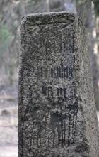
28 марта 2014 года в Виштынецком экомузее состоялось заключительное мероприятие по международному проекту, посвящённому историко-культурному наследию Роминтской пущи.
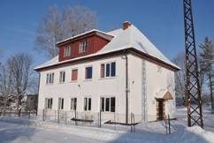
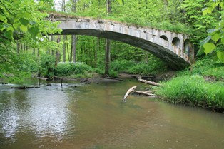
Иногда, мы даже не предполагаем, что место, в котором живём, обладает удивительной историей, что рядам с нами находятся настоящие историко-культурные памятники, о которых мы ничего не знали ранее, а иногда даже никогда не видели их. Знание историко-культурного наследия своей земли позволяет нам совсем по-иному взглянуть на место, где мы живём, на самих себя в этом месте. Но самое главное, это знание и понимание истории формирует уважительное отношение к своей земле, к её прошлому, заставляет задуматься о её будущем. Именно поэтому главной целью проекта, который осуществляется сотрудниками Калининградского регионального общественного учреждения «Виштынецкий эколого-исторический музей» совместно с Ландшафтным парком Пущи Роминской (Польша), стало ознакомление местных жителей Роминтской пущи и её окрестностей с богатым историческим наследием этой земли. Данный проект получил поддержку по Программе «Преобразование в регионе» - RITA, реализуемой Фондом Образование для демократии и получил название «Калининградская область: знание и уважение к истории = местный патриотизм = гражданское общество». В сентябре состоялась поездка делегации из Калининградской области в польскую часть Роминтской пущи для ознакомления с опытом польских коллег по сохранению историко-культурного наследия. Сотрудники Виштынецкого экомузея на протяжении нескольких лет собирают информацию о памятниках истории и культуры нашей части этого удивительного леса. В их перечень вошли памятные камни, поставленные в честь императорских охот и известных людей, мосты через реку Красную, некоторые памятные места, захоронения и даже дороги. В рамках проекта в 2013 году 2 и 6 ноября состоялись семинары для взрослой и детской аудиторий. На этих встречах местным жителям были представлены предварительные итоги проекта - доклад об историко-культурном наследии Роминтской пущи. Для детей была организована экскурсия в окрестности посёлка Краснолесья, в истоки реки Синей. Ранее здесь располагалось старое поселение Прасберг, возникшее около пятисот лет назад. Когда-то, в этом месте существовала водяная мельница. В программе семинара для взрослых участников была запланирована экскурсия по Роминтской пуще. В ходе неё местные жители познакомились с некоторыми памятными камнями, а также посетили историческое место в Радужном, где в конце XIX - начале XX веков располагалась охотничья резиденция императора Германии и короля Пруссии Вильгельма II.
Следует отметить, что из огромного числа историко-культурных объектов на юге Нестеровского района, не считая памятников археологии, лишь восемь имеют официальный статус и охраняются государством. Поэтому перед исполнителями проекта стяла задача не только представить историко-культурные памятники Роминтской пущи жителям района, но и сформулировать предложения для специальных охранных ведомств о постановке их на учёт и государственной охране.
Результаты проекта были представлены 28 марта на заключительном семинаре. В музее собрались представители общественности и государственных структур, Агентства по международным и межрегиональным связям Правительства Калининградской области, научно-производственного центра по охране памятников, краеведы и, конечно, местные жители, а также партнёры по проекту из Польши и коллеги-музейщики.
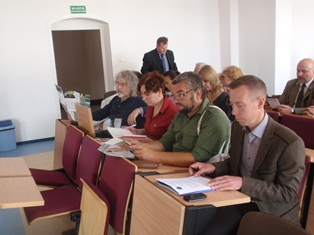
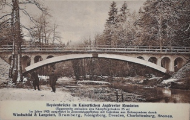
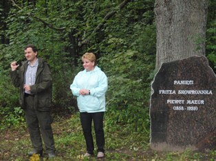
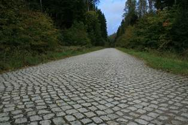
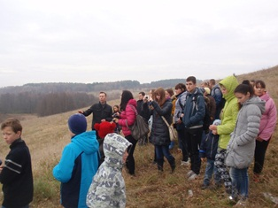
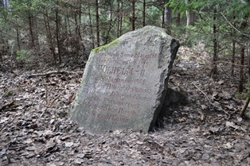
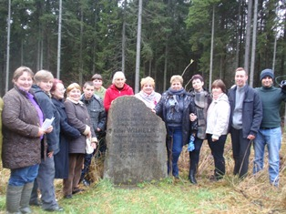
Собравшимся была представлена брошюра «Наследие Роминтской пущи», которая стала основным результатом проекта. В неё вошли практически все объекты историко-культурного наследия, которые были выявлены в ходе инвентаризации. Кроме того, в посёлке Краснолесье было установлено три информационных стенда об истории лютеранской кирхи, памятнике погибшим жителям посёлка в годы Первой мировой войны, истории посёлка, а также стенд на территории музея с картой и изображениями историко-культурных достопримечательностей одного из самых крупных и загадочных лесных массивов Калининградской области - Роминтской пущи. В ходе дискуссии участники выступили с предложениями о возможностях сохранения её наследия. Высказывались предложения по созданию маршрута, который бы объединил различные памятники, так как именно постоянное их использование принесёт им известность и негласный статус важных объектов, станет залогом постоянного общественного внимания к ним. Также было предложено для всех желающих местных жителей провести курсы экскурсоводов, которые могли бы сопровождать гостей и туристов к памятникам пущи, квалифицированно рассказывая о её историко-культурных и природных достоинствах. Директор ландшафтного парка Пущи Роминской с польской стороны Яромир Краевский высказал предложение в продолжении сотрудничества и надежду на то, что когда-нибудь будет издана книга о памятниках истории и культуры всего единого пространства Роминтской пущи, которая объединяет людей из Польши и России, невзирая на государственные границы.
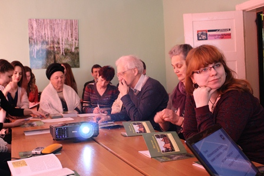
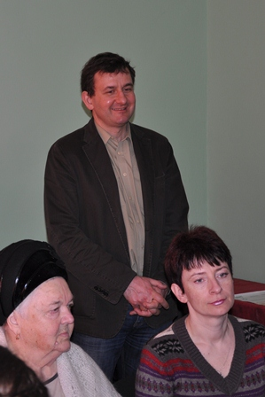
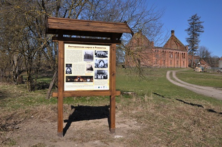
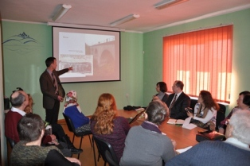
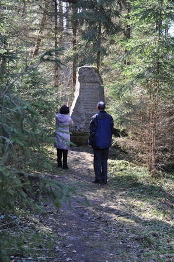
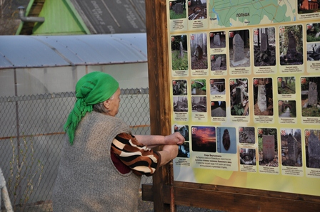
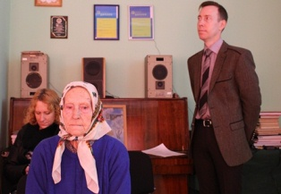
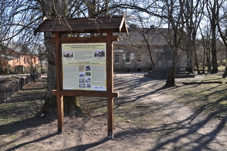
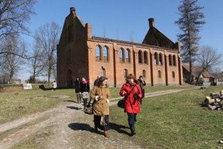
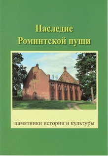
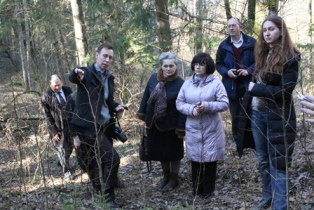
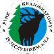